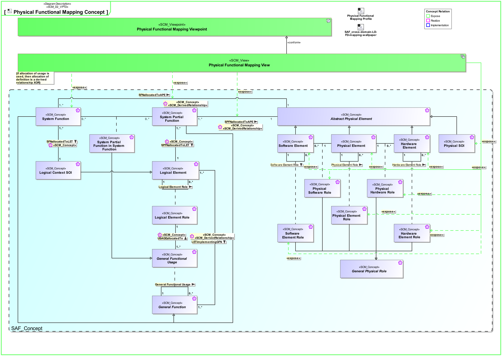
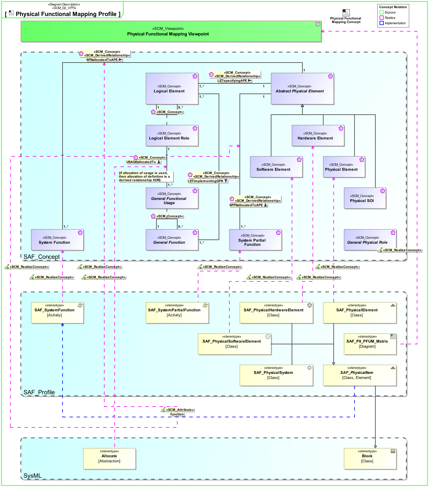

P8_PFUM Physical Functional Mapping Viewpoint
| Domain | Aspect | Maturity |
|---|---|---|
| Physical | Traceability & Mapping |
The Physical Functional Mapping Viewpoint supports the analysis of the assigment of system functions and system partial functions to physical system elements. The result shall be computed from the assigment of functions to logial system elements and the assignment of logical system elements to physical system elements
The Physical Functional Mapping Viewpoint supports the “Design Definition Process” activities of the INCOSE SYSTEMS ENGINEERING HANDBOOK 2023 [§2.3.5.5] and contributes to the artifact “Traceability Mapping”.
Furthermore, the Physical Functional Mapping Viewpoint supports the “Allocation and Partitioning of Functional Entities to Physical Entities” activities.
A FBS_to_PBS mapping matrix featuring
The following Stereotypes / Model Elements are used in the Viewpoint:
The Diagram shows the concepts exposed by the viewpoint, and related concepts if necessary.

| Concept | Documentation |
|---|---|
| Physical SOI | Represents the Physical SOI on Physical Level. |
| SPFNallocatedToAPE | Specifies the fact that a System Partial Function is assigned to an Abstract Physical Element. Note: This fact may be derived from the Usage of Function of a System Partial Function allocated to a Physical SOI Element Role |
| System Function | Specifies the fundamental action or task that have to take place in the System in accepting and processing the inputs and in processing and generating the outputs. A System Function * accepts input from the System boundary * exposes its output at the System boundary * changes the System's State * is dependent on System's State Note: A System Function does not need to expose observable output, when it changes the System's state in a way that is observable by other system functions. Furthermore, a System Function does not need to accept any input from the system boundary, when it is dependent on the System State, which in turn is changeable by other System Functions. |
| Hardware Element Role | Specifies the fact that a hardware structure comprises hardware elements. |
| Hardware Element | Pure Hardware Elements. Similarity with the V-Model "hardware unit". |
| Physical Element Role | Specifies the fact that a physical structure comprises physical elements. |
| Physical Element | A composition of Hardware and Software Elements. Similarity with the V-Model segments and system. See [VXT]. |
| Physical Hardware Role | Specifies the fact that a physical structure comprises hardware elements. |
| Physical Software Role | Specifies the fact that a physical structure comprises software elements. |
| SFNallocatedToAPE | Specifies the fact that a relationship is derived from the assignment of Functions to Logical Elements and the assignment of Logical Elements to Physical Elements. |
| Software Element Role | Specifies the fact that a software structure comprises software elements. |
| Software Element | Pure Software Elements. Similarity with the V-Model "software unit". |
The Diagram shows the implementation of exposed concepts.
